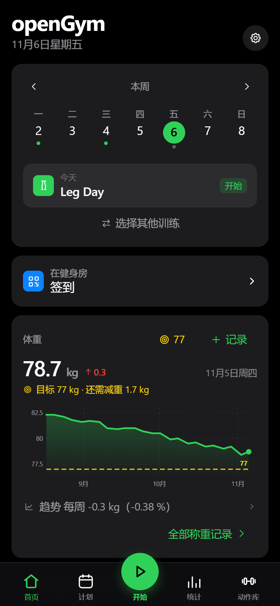
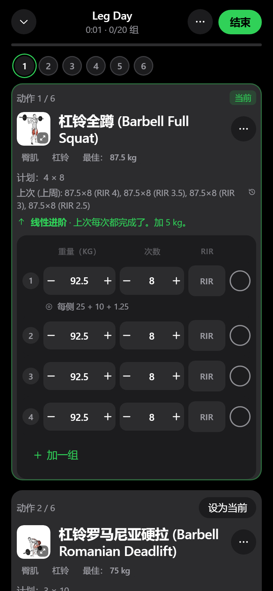
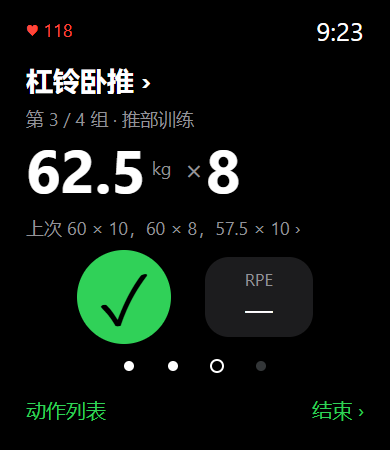
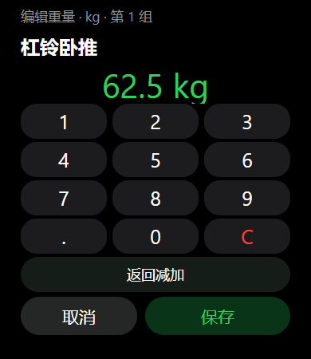

灵活安排训练
按周或轮换编排计划，
组数、次数与休息可调。
计划、逐组记录、动作库与进步统计，
从开练到复盘，让每一次努力有迹可循。


按周或轮换编排计划，
组数、次数与休息可调。
逐组记录、休息倒计时，
对照上次表现继续进步。
按肌群、器械查找动作，
查看动作示范与要领。
日历、趋势与阶段报告，
回顾训练量和个人纪录。
训练问答、复盘与计划建议，
按需配置自己的 AI 服务。
本地优先、备份与导出，
可选自托管和多端同步。
重点完善 AI 对话改计划、vivo 手表训练，
以及中文动作资料和更新体验。
“我想把练背除了第一个动作以外，
其他改为三组。”
不必只从复盘入口改计划。确认后改后续模板，
不回写本场和历史；范围不明确时先澄清。
参考 Apple Watch 的选组与字段编辑，
结合 Wear OS「点击动作名切换」的入口逻辑。


手表为代码生成预览，非真机；固件交互仍需实机验收。
当前不含手表动作演示，不承诺强制唤起后台手机。
在官方中文基础上，
补充、校正名称与要领。
本仓库独立更新源，
手机、手表包与校验同发。
官方核心功能 × 我们的定制拓展
训练计划 · 逐组记录 · AI · BlueOS
基于 DuarteSantos8/openGym · 非官方定制分支
手机演示数据截图 · AGPL-3.0